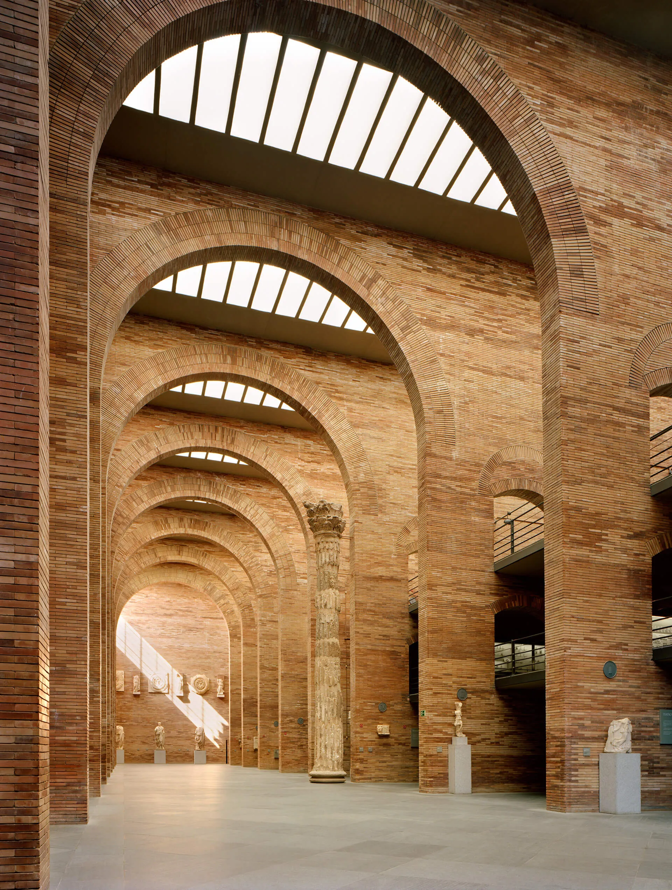

Fenêtre sur l'Empire Antique


Musée National d'Art
Le Musée national d'Art romain à Mérida, inauguré en 1980, est un véritable trésor architectural et culturel qui témoigne de l'héritage romain en Espagne. Situé dans cette ville emblématique, autrefois capitale de la Lusitanie romaine, ce musée fascine par sa collection exceptionnelle d'œuvres antiques. Conçu par l'architecte Rafael Moneo, le bâtiment lui-même est une œuvre d'art, combinant subtilement modernité et respect pour les vestiges du passé. Il abrite une impressionnante collection d'objets et de sculptures datant de l'époque romaine, provenant principalement des sites archéologiques locaux.

La Splendeurs du Musée
Les expositions du musée offrent un voyage captivant à travers l'histoire romaine. Des statues majestueuses, des mosaïques époustouflantes, des fresques bien préservées et d'autres artefacts remarquables transportent les visiteurs à l'époque glorieuse de l'Empire romain.
Chaque pièce exposée raconte une histoire, offrant un aperçu de la vie quotidienne, de l'art, de la religion et de la culture de cette période historique fascinante. Les collections du musée sont un témoignage éloquent de l'ingéniosité artistique et de la grandeur de la civilisation romaine.